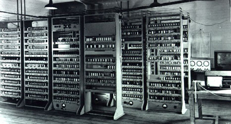

Prima generatie de Calculatoare
1940-1956
Prima generatie de calculatoare este caracterizata de utilizarea tuburilor electronice.

Aceste calculatoare erau foarte grele si foarte mari. Programarea lor era dificila, deoarece foloseau un limbaj de programare low-level. Erau folosite pentru calcule si stocare de date.
Datorita dimensiunilor sale aceste modele necesitau camere de stocare speciale si consumau multa energie.
Cartelele perforate si cartelele magnetice au fost folosite pentru e imbunatati capacitatea de stocare.
De asemenea in acestea perioada a fost dezvolat si limbajul masina (cod masina).
Exemple de calculatoare din aceasta generatie:
- ENIAC - Electronic Numerical Integrator and Computer
- EDVAC - Electronic Discrete Variable Automatic Computer
A fost primul calculator electronic de uz general. Era un calculator numeric, Turing-complet, capabil de a fi reprogramat pentru a rezolva o gama larga de probleme calculatorii.
Continea in jur de 18 000 de tuburi electronice

Principala diferenta dintre EDVAC si ENIAC era faptul ca EDVAC functionare pe un sistem binar spre deosebire de ENIAC care utiliza unu sistem zecimal. De asemenea EDVAC era un calculator cu programe memorate.
Principalele caracteristici ale acestei generatii:
| Caracteristica | Componenta |
|---|---|
| Principala componenta electronica | Tubul electronic |
| Limbajul de programre | Limbaj masina (cod masina) |
| Memoria | Benzi magnetice si tamburi magnetici |
| Dispozitive I/O | Cartele perforate si benzi de hartie |
| Viteza si marime | Foarte lente si foarte mari |